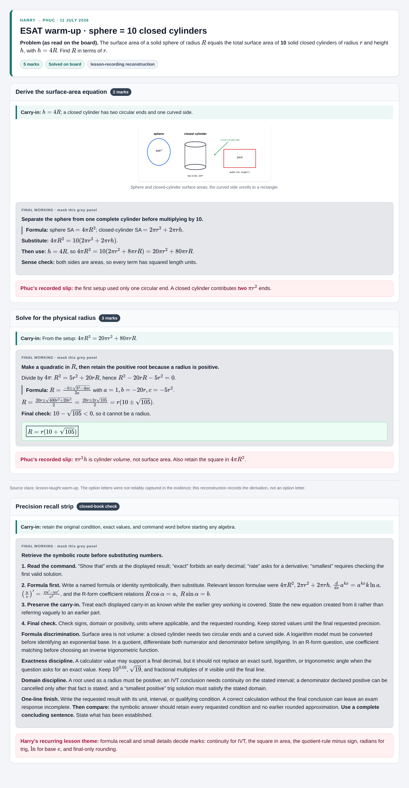
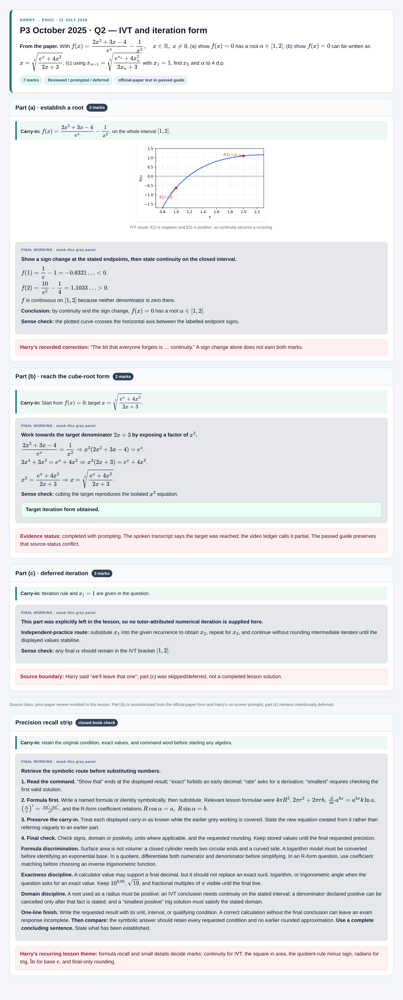
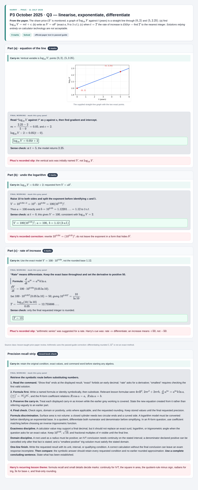
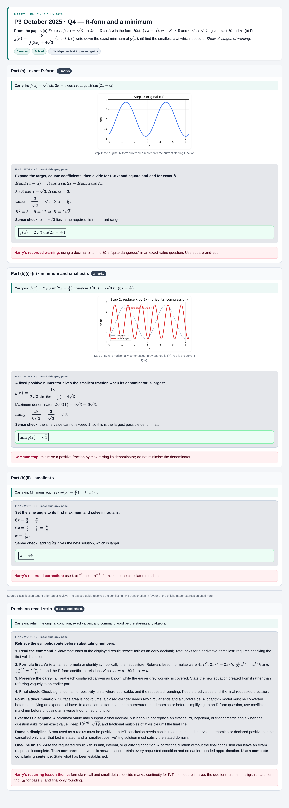
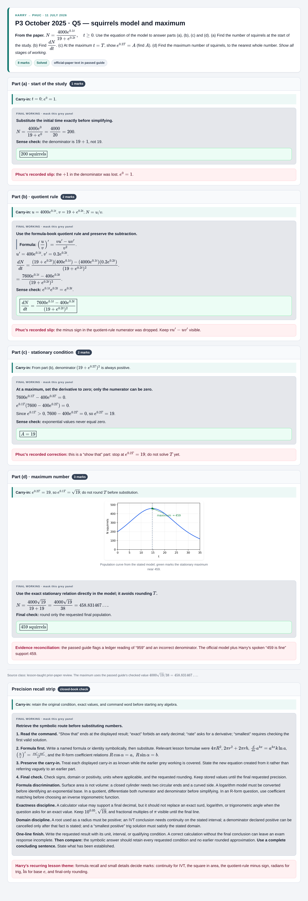

Harry → Phuc · 11 July 2026
P3 October 2025 + ESAT
multi-step deck
Five source-bounded, maskable working cards rebuilt to the current multi-step format. Each opens as a standalone card and includes a pre-rendered PNG export.
Scope boundary. P3 Q1 is deliberately not included: the passed guide says it was discussed only and does not preserve a complete verbatim prompt for an exact standalone card. P3 Q6–Q9 were not discussed in the lesson. This local v2 pack does not claim independent review or publication.

Solved on board
ESAT warm-up
Sphere = 10 closed cylinders

Reviewed / prompted / deferred
P3 Q2
IVT and iteration form

Solved
P3 Q3
Linearise, exponentiate, differentiate

Solved
P3 Q4
Exact R-form and a minimum

Solved
P3 Q5
Squirrels model and maximum